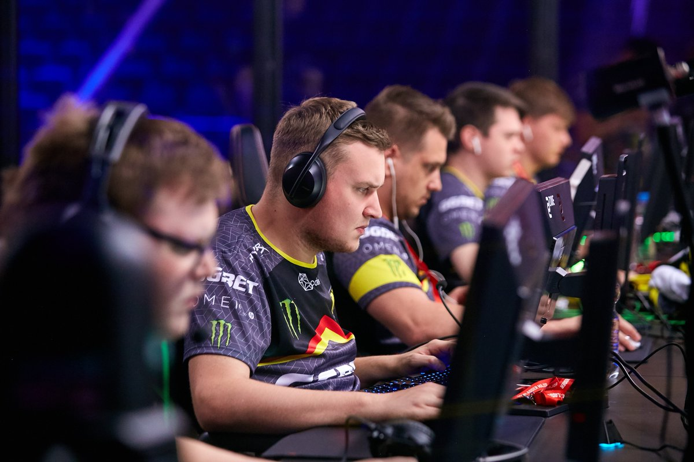

Что такое киберспорт?
Ки́берспо́рт (также известен как «компью́терный спорт» или «электро́нный спорт», англ. esports) — командное или индивидуальное соревнование на основе компьютерных видеоигр.
В России признан официальным видом спорта.

Помимо того, что по сути своей это бесполезная трата реального времени,
так еще и довольно вредно с точки зрения здорового образа жизни. Ситуацию спасло то,
что люди всегда, везде и во всем любили соревноваться друг с другом. Желание оказаться лучшего
другого в чем-либо порождает собой спортивный интерес. Почему именно спортивный интерес?!
Да ведь потому, что в момент состязания человек начинает прикладывать усилия над собой для достижения
результата. Усилия над собой, в каком бы виде они ни проявлялись — физическом, умственном или то и другое
вместе — это развитие. Спорт в любых своих проявлениях направлен именно на развитие в людях всех самых лучших
качеств. Исходя из всего вышенаписанного, я могу с полной уверенностью сказать, что киберспорт, развивает в
людях много прекрасных качеств и поэтому по праву должен считаться спортом. Но у киберспорта, есть существенное
отличие от общепризнанных видов спорта.
Вы сможете однозначно ответить на вопрос: «Киберспорт – это профессия или хобби?», если узнаете, сколько тренируются участники команд.
Нужно отточить реакции, изучить каждую мелочь, каждую деталь карты и суметь войти в полное взаимодействие с другими пользователями.
Профессиональные игроки проводят за компьютером по 8-12 часов в день, у них есть тренеры – специалисты, вырабатывающие стратегии и тренирующие дисциплину и реакцию.
Неудивительно, что спортсмены зарабатывают достойно, ведь киберспорт – это сложный процесс!
«Киберспорт — это точно такой же вид спорта, как и любой другой, который называют традиционным. Это не соревнование человека с компьютером, это соревнование двух
людей или команд, интеллектуальное состязание, в котором компьютер выступает в качестве спортивного инвентаря или турнирной площадки», - говорит он. Также Смит подчеркнул,
что далеко не все игры имеют отношение к компьютерному спорту - для этого игра должна обладать соревновательным элементом, быть короткосессионной, бессюжетной и обеспечивать
равные условия для соревнующихся игроков. Поэтому в киберспорте соревнования проводятся примерно по 20 играм из сотен тысяч или даже миллионов существующих.
«Профессиональные киберспортсмены, соревнующиеся на мировом уровне, обязательно уделяют внимание своей физической форме. Победу от поражения может отделять миллисекунда,
всё решают реакция и скорость мышления спортсмена, а высокого уровня этих параметров нельзя достичь без хорошего физического состояния и подготовки», — рассказал
«Парламентской газете» генеральный менеджер известной российской киберспортивной команды Virtus.pro Роман Дворянкин. Киберспорт, соглашается он, это не тяжёлая атлетика
или бег с препятствиями, но особых различий между ним и такими давно признанными видами спорта, как, например, шахматы или стрельба из лука, нет. Что касается психологического
аспекта, то различия и вовсе отсутствуют. Киберспортсмены так же нацелены на победу, у них в наличии то, что называется спортивным духом, и, как любой другой вид спорта,
киберспорт находится вне политики.
Новости киберспорта
- -Nigma проиграла Tundra Esports в первом дивизионе DPC 2021: Season 2 для Европы
- -Ninjas in Pyjamas победили Anonymo Esports в переигровке на Flashpoint Season 3
- -Организаторы Apex Legends Global Series
могут увеличить призовой фонд до $3 млн благодаря краудфандингу